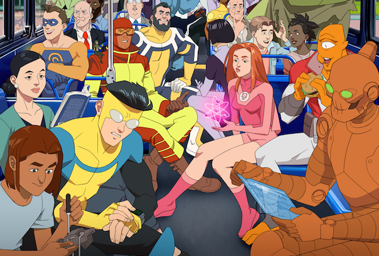

Characteristics
- She loves the color pink
- She designed her costume herself!
- She can change the molecular structure of everything but living beings
- She's still trying to find her place in the world and make a difference
Eve out of costume
Eve's Friends
Eve has friends who are heroes and civiians. She is the closest with Mark, who is also the superhero Invincible. Click on the links below to learn more about her friends.
Eve with her friends